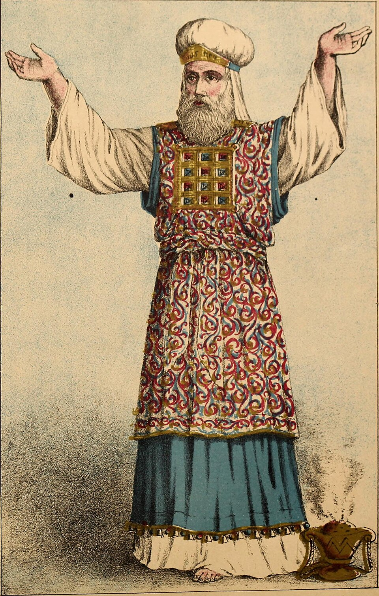

Other languages: Français
The high priest's garment: the square hidden in the tashbetz
By Anibal Edelberto Amiot — Published September 2, 2026 · translated from the French

In the Book of Exodus, the description of the high priest's vestments lingers over details one might think purely decorative. They are not. Two of them in particular sketch — long before any magic square — the same intuition that runs through La Livrée d'Hermès: that the geometry of a garment can carry meaning as much as the body it clothes.
A garment “in chequer work”, not merely “embroidered”
Exodus 28:39 describes the high priest's inner tunic, the ketonet, with a precise Hebrew word: tashbetz (תַּשְׁבֵּץ). The classic English translations (King James, New American Standard, English Standard Version) render it literally as “checkered” or “checker work”. The usual French translations, for their part, soften the term to « brodée » (“embroidered”) — a choice that preserves the idea of ornament but erases the geometric pattern that the Hebrew word explicitly names.
This is no minor detail. The chequer is not a decoration that one would read into the garment from the outside: it is the word itself that says so. And it is the French translation that departs from the source, not the other way round.
The breastplate: a square that divines
Alongside the tunic, Exodus 28:15 describes another, distinct element: the breastplate, the hoshen (חֹשֶׁן), set with twelve stones bearing the names of the twelve tribes of Israel. The text insists on its shape: “square it shall be, doubled, half a cubit long and half a cubit wide.”
Marc-Alain Ouaknin, in Le secret des nombres, points out that the three root letters of hoshen also spell, in another order, the Hebrew verb “to divine” (nahoch). The bearer of this square becomes, through the very letters of its name, a diviner — it was inside this breastplate that the Urim and Thummim were kept, the objects the high priest used for oracular decision, though the biblical text never specifies their exact nature.
The same root also gives nahach (נָחָשׁ), “serpent” — a word that runs through the whole Hebrew Bible in senses that at first seem contradictory: the serpent of the Fall, the serpent of Pharaoh's magicians, the one that bites and kills in the wilderness, and the one, fashioned in bronze and raised on a standard, that heals in that same wilderness (Numbers 21:8–9). One further detail, verifiable by standard Hebrew gematria: nahach and Machiah (“Messiah”) share the same numerical value, 358. The serpent that kills and the serpent that heals, the diviner's garment and the verb of divination folded into its own name — the hoshen carries, in its vocabulary alone, an ambivalence held within a single square.
Two garments, since Genesis
Jewish exegetical tradition distinguishes two garments given to humanity in Genesis: before the expulsion from Eden, a “garment of light” (or, אור); after it, “garments of skin” (ohr, עור). Two Hebrew words that differ by only one consonant, yet are wholly opposed in what they designate — light against skin. Whether or not one takes this near-homophone as a play on words rather than as a scholarly etymology, the tradition it carries is ancient and genuinely twofold: two states of one and the same body, the one luminous and without limit, the other bounded and opaque.
What this detour allows — and what it does not claim
Nothing in these texts anticipates a magic square. The connection runs the other way: it was while searching, for La Livrée d'Hermès, for a vocabulary able to carry the idea of a garment that distinguishes and signals, that the high priest's chequer and the doubled square of his breastplate emerged as a precedent — direct, textual, verifiable — for an intuition the book explores elsewhere through magic squares and self-constructed squares. The high priest's garment does not contain that square in embryo; but it shows that a garment can be thought of, and has been for a very long time, as a geometry that speaks.
Sources mentioned: Exodus 28 (verses 15, 16, 30, 39); M.-A. Ouaknin, Le secret des nombres; Numbers 21:8–9.
This article was first published in French: Le tashbetz, carré caché du grand prêtre.